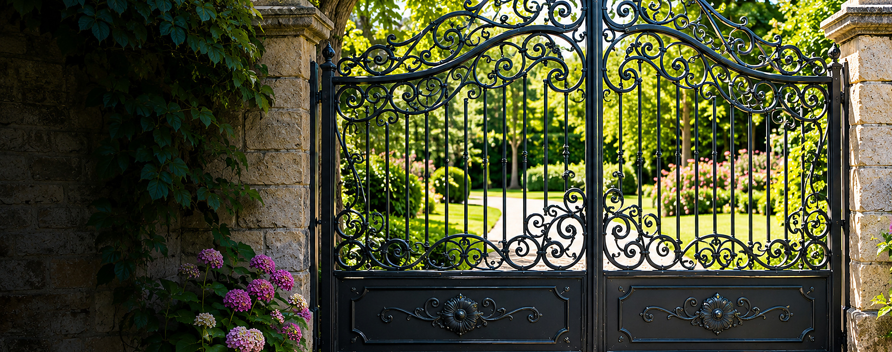
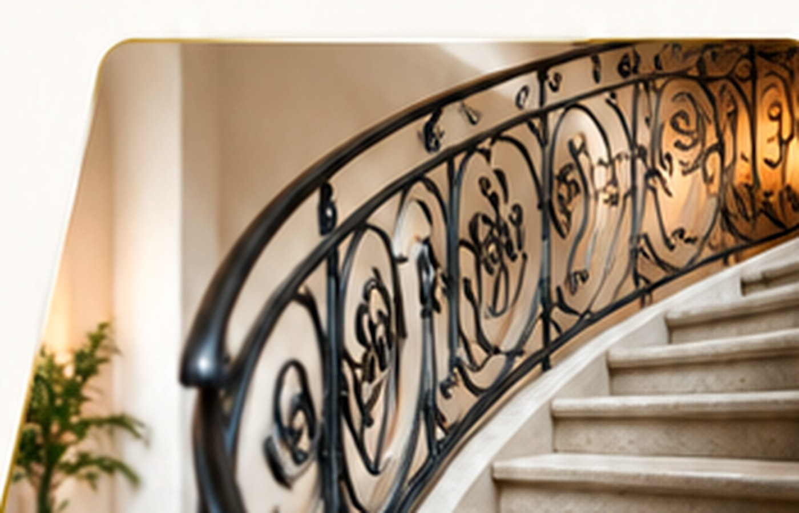

Créations sur mesure
en ferronnerie d’art
Portails · Garde-corps · Sculptures · Pièces uniques
Demandez votre devis gratuitVotre demande
de devis
❧ Avis clients ❧
★★★★☆
4,0/5 pour 2 avis sur le site existantDes créations réalisées selon votre projet, avec le savoir-faire d’un artisan ferronnier.
✦ ✦ ✦
Une fabrication et une restauration de ferronnerie d’art dans le Nord.
✦ ✦ ✦
VOTRE FERRONNIER D’ART À BAILLEUL
Art Forges Sculptures
Installé dans le Nord, Frédéric Hennebelle exerce le métier de ferronnier d’art depuis plus de 35 ans. Il imagine, façonne et pose des ouvrages de ferronnerie personnalisés, du portail en fer forgé à la rampe d’escalier, en passant par les éléments décoratifs et la restauration de pièces anciennes.
Chaque projet est étudié selon ses dimensions, son style et les contraintes du lieu. Le métal est travaillé pour donner naissance à des pièces durables, au caractère singulier.
Notre savoir-faire
NOS DOMAINES D’INTERVENTION
Des réalisations uniques et personnalisées
Savoir-faire
artisanal
artisanal
Créations
sur mesure
sur mesure
Qualité
et durabilité
et durabilité
Fabrication
française
française